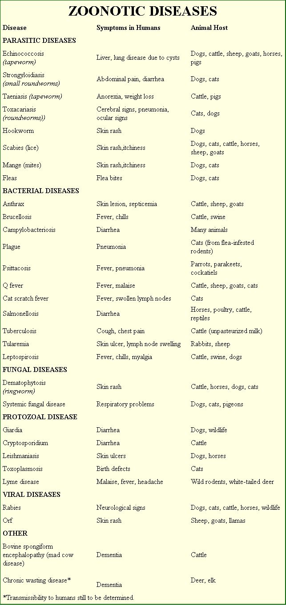

1 Maintain good vaccination programs for livestock and domestic pets. Consult with your veterinarian to establish a sensible program for your animals.
2 Aggressively deworm livestock and pets and submit fecal samples for annual testing. Puppies and kittens should be dewormed starting at three weeks of age.
3 Maintain hygiene, especially after contact with calves, piglets, puppies and kittens. Isolate any live stock with diarrhea and wear protective clothing when dealing with them. Disinfect your boots in a bath before leaving the pen area.
4 Keep infants and young children from playing in areas where animals defecate. Remember that some parasites live for years in the soil.
5 Pregnant women should always wear gloves when dealing with soil and should never handle cat litter.
6 Fence off drinking water sources to avoid contamination by livestock or wildlife.
7 Wear protective clothing when handling aborted animal fetuses or animal carcasses. Disinfect all clothing afterwards.
8 Avoid unpasteurized milk and cheese.
9 Keep all pets from contact with prairie dog colonies.
10 Immediately report any skin diseases in livestock and pets to your veterinarian.
|
 |
|
|